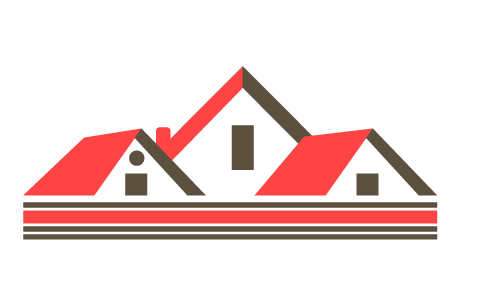

<mat-sidenav-container class="sidenav-container mat-app-background" [ngClass]="{'dark-theme-mode':isDarkTheme}">

  <mat-sidenav #drawer class="sidenav" fixedInViewport="true" attr.role="navigation" mode="over" fixedTopGap="65">
    <mat-accordion>
      <mat-toolbar>Menu</mat-toolbar>
      <mat-divider></mat-divider>

      <mat-nav-list>

        <a mat-list-item routerLink="/home">Home</a>
        <mat-divider></mat-divider>

        <mat-divider></mat-divider>
        <a mat-list-item routerLink="/properties/all">
          Property List
        </a>

        <mat-divider></mat-divider>
        <a mat-list-item routerLink="/sale/properties/all">
          Sale Property List
        </a>

        <mat-divider></mat-divider>
        <a mat-list-item routerLink="/sale/bids/all">
          Sale Bid List
        </a>

        <mat-divider></mat-divider>
        <a mat-list-item routerLink="/admin" *ngIf="authSer.isAdmin">
          Admin
        </a>

        <mat-divider></mat-divider>

      </mat-nav-list>

    </mat-accordion>
  </mat-sidenav>

  <mat-sidenav-content>

    <div *ngIf="authSer.isUserLoggedIn()">
      <mat-toolbar color="primary" style="position: fixed;height:45px">
        <button type="button" aria-label="Toggle sidenav" mat-icon-button (click)="drawer.toggle()">
          <mat-icon aria-label="Side nav toggle icon" aria-hidden="false">menu</mat-icon>
        </button>
        
        <span>{{title}}</span>
        <span style="margin-left: 20%">Welcome to Property App</span>
        <span *ngIf="authSer.username != null">: {{authSer.username}}</span>

        <div class="spacer"></div>

        <mat-icon style="margin-right: 20px;cursor: pointer;" [matMenuTriggerFor]="menu">format_color_fill</mat-icon>

        <button style="margin-right: 25px;cursor: pointer;" color="warn" mat-mini-fab (click)="logout()" title="Logout">
          <mat-icon>logout</mat-icon>
        </button>
      </mat-toolbar>
    </div>
    <div class="view mat-app-background">
      <router-outlet></router-outlet>
    </div>
  </mat-sidenav-content>
</mat-sidenav-container>

<ngx-spinner bdColor="rgba(0, 0, 0, 0.8)" size="medium" color="#fff" type="ball-clip-rotate-multiple"
             [fullScreen]="true">
  <p style="color: white"> Loading... </p>
</ngx-spinner>

<mat-menu #menu xPosition="before">
  <button mat-menu-item (click)="storeThemeSelection(false)">Light</button>
  <button mat-menu-item (click)="storeThemeSelection(true)">Dark</button>
</mat-menu>
